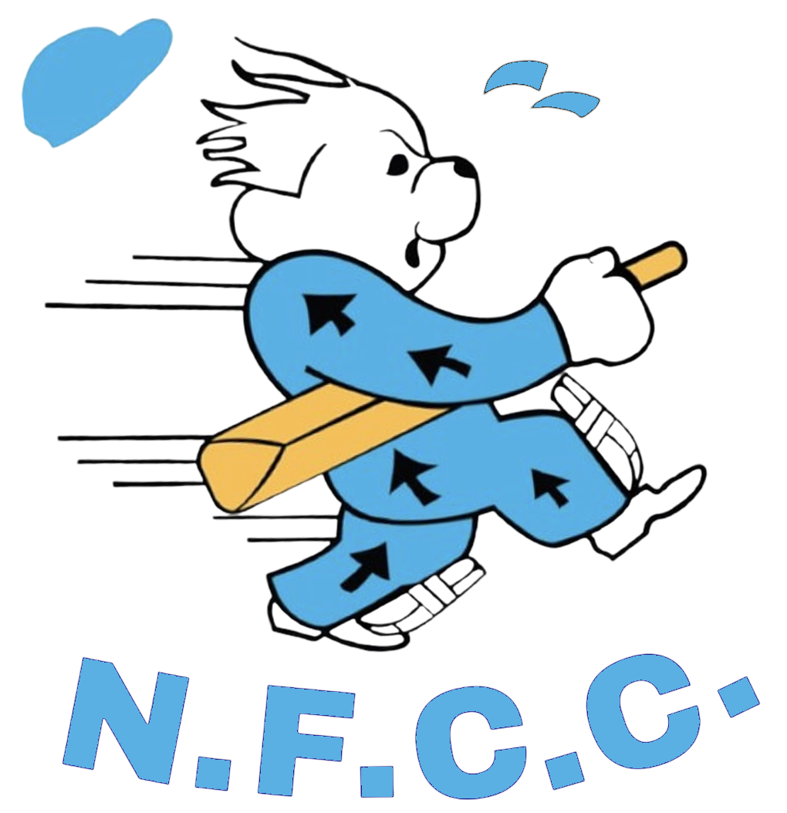

Club career records
All players
No player records match those filters.

Newport Fugitives Cricket Club · 1990–present
Career records from across the 1st XI, 2nd XI and 3rd XI—combined into one home for the whole Fugitives family.
Club career records